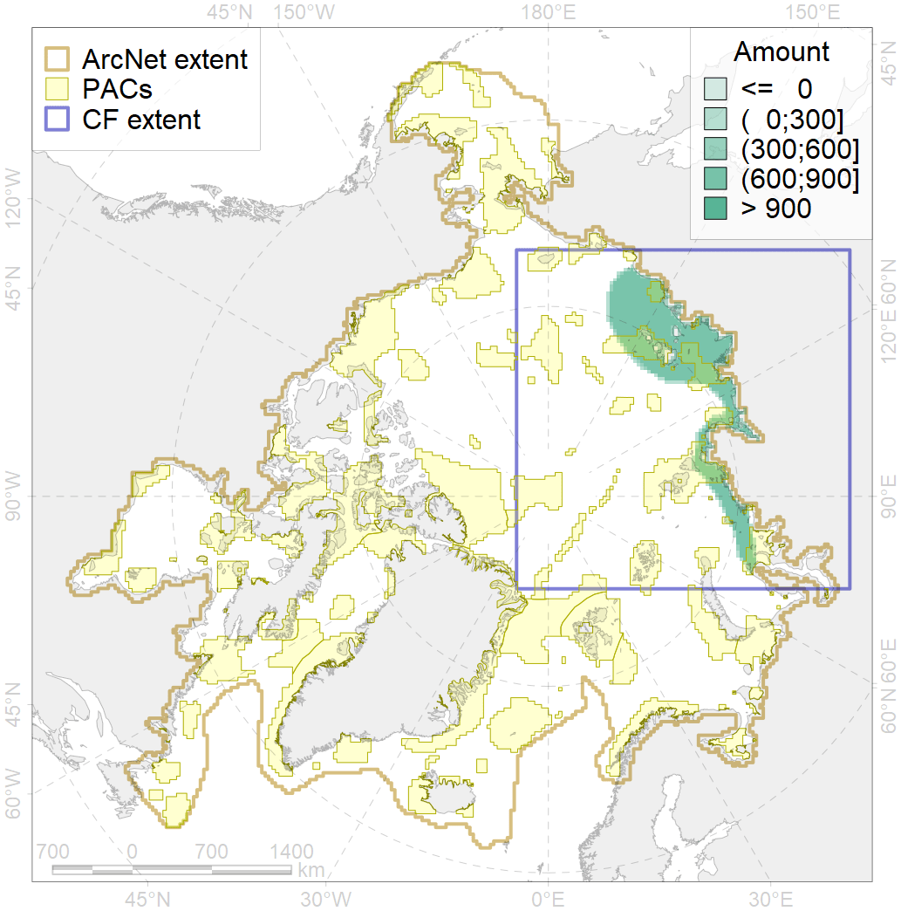
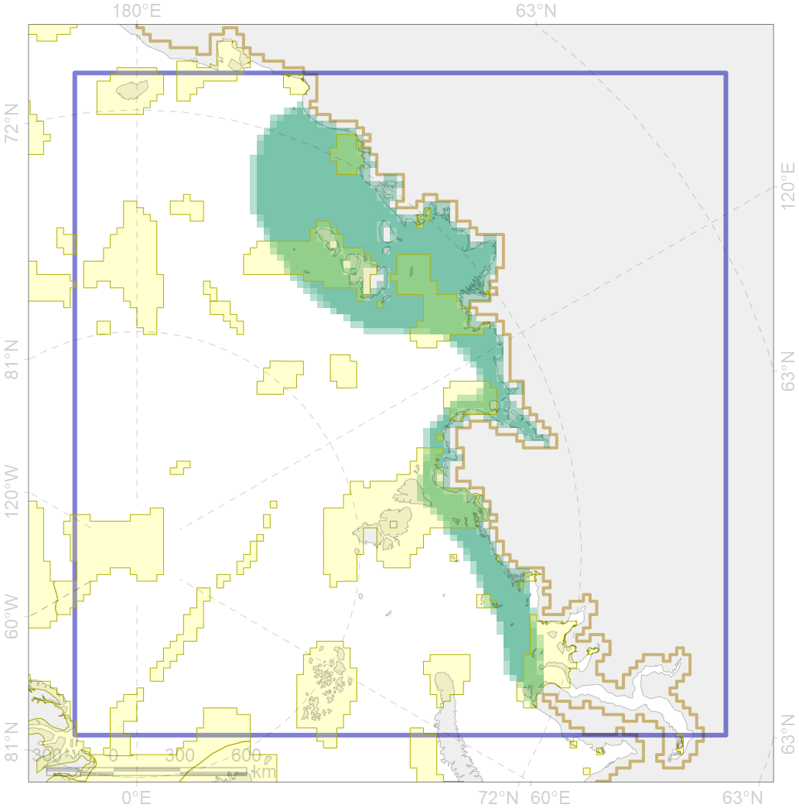

7035

| CF code | 7035 |
| CF name | Siberian shelf region |
| Time Period | 1900-2010 |
| Source(s) | Spiridonov et al., in prep. |
| Seasonality | 1-12 |
| Depth Horizon | Sea floor |
| Methodology | Boundaries derived from biogeographic regionalization scheme, which is in preparation for publication |
| Use Restrictions | Not for public use prior to publication (expected in early 2020) |
| Author Name | V. Spiridonov |
| Notes | |
| Scenario’s Target | 0.0856632 |
| Target Achievement | 0.300 (Scenario: 350.7%) |
| PAC | Share of the Total Amount within the PAC | Share of the Target Achievement for the ArcNet | PAC’s Contribution to the Target Achievement |
|---|---|---|---|
| 10 | 2.5%2.5% | 22.1%22.3% | 6.3%6.4% |
| 11 | 8.0%8.0% | 92.0%92.0% | 26.2%26.2% |
| 12 | 8.5%8.6% | 88.6%89.3% | 25.3%25.5% |
| 13 | 1.7%1.7% | 18.8%18.8% | 5.4%5.4% |
| 14 | 5.3%5.3% | 58.1%58.3% | 16.6%16.6% |
| 15 | 0.2%0.6% | 2.0%2.7% | 0.6%0.8% |
| 16 | 2.1%2.2% | 23.4%23.5% | 6.7%6.7% |
| inner | 28.4%28.9% | 305.0%306.9% | 87.0%87.5% |
| outer | 71.6%74.1% | 45.7%69.7% | 13.0%19.9% |
| † supplement values are for area consistence whereas principal values are for Accenter compatible gridded stats |